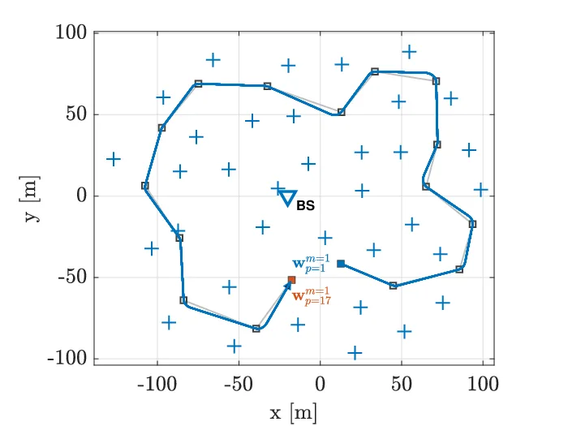
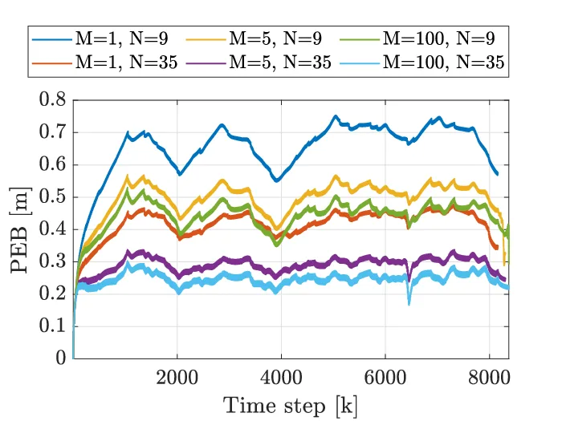
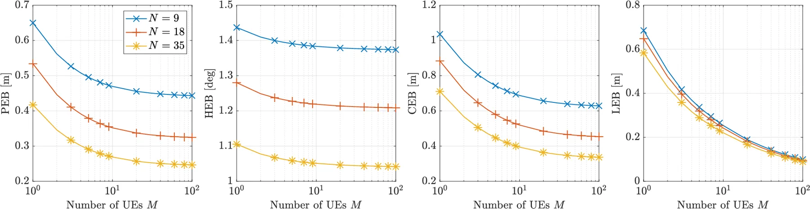
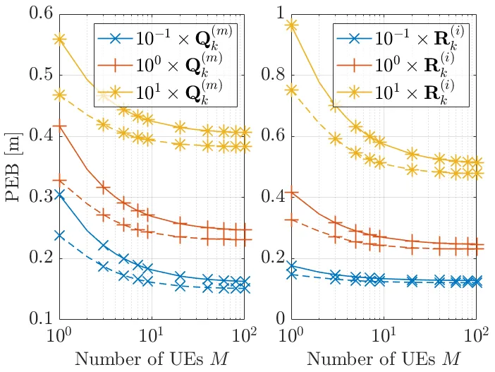

信息共享如何提升无线 SLAM：协作场景的性能下界
Improving Radio SLAM via Information Sharing: Collaborative Performance Bounds
一句话：把「多车共享蜂窝量测能省多少定位误差」写成一个可算的下界，并指出哪里开始收益饱和。
PEB
LEB
PEB growth
gain
作者、单位与技术谱系 · Research context
作者与单位
研究脉络
- Kaltiokallio 等：mmWave SLAM 的 EK-PHD 滤波（2021）团队前作关系：提供单 UE 无线 SLAM 的滤波式建模与量测模型，本文把其扩展到多 UE 协作并改写为性能界。[Radio SLAM 原文 §II-B、§III]
- Robust snapshot radio SLAM（TVT 2025）方法上游关系：给出快照式无线 SLAM 的几何量测模型；本文沿用其双站多径观测方程并把界推到滤波（时序）情形。[Radio SLAM 原文 §II-B 式(4)]
- Tichavsky 后验 CRB 递推（1998）方法基座关系：提供离散时间非线性滤波的 PCRB 递推公式，本文在其上加入多 UE 与地标的分块结构。[Radio SLAM 原文 §III-A]
合作网络
- Tampere × BrnoTampere University → Brno University of Technology关系：共同署名（双聘）[arXiv 摘要页]
- Tampere × Ericsson ResearchTampere University → Ericsson Research关系：共同署名[arXiv 摘要页]
- MiFuture (MSCA) → 本文EU Horizon Europe MiFuture (No. 101119643) → 本文工作关系：项目/经费依赖[Radio SLAM 原文致谢]
作者与单位取自论文首页标注；团队前作与理论基座取自正文引用与相关工作段的显式表述；资助关系取自致谢，均为原文事实，未推断师生或雇佣关系。
方法本质拆解 · What actually changed
是不是微调？
没有模型也没有训练，是纯解析推导加蒙特卡洛数值验证：闭式给出 FIM 递推与四类下界，仿真只用来确认曲线形状符合预期。所有「参数」都是场景设定（噪声协方差、UE 数、地标数），不是学出来的。
有没有额外约束？
假设包括：集中式全信息共享、量测与地标的数据关联已知、LOS 始终可用、NLOS 只发生一次反射、地标静态、UE 之间运动独立（不互相约束）。这些假设共同把问题限制在「理想关联 + 理想通信」的上界场景。
推理/后端到底做了什么？
没有推理后端：每个时间步只做 FIM 递推（先验项 + 数据项）再取逆的对角块，计算量随状态维数 4M+2N 增长。它不估计任何真实状态，只回答「任何无偏估计器的 MSE 都不可能低于这个值」。
方法本质是什么？
本质是把「协作」翻译成信息矩阵的可加性：多个 UE 对同一地标的观测在数据 FIM 里相加，共享越多、几何越分散，逆矩阵对应块就越小。它改变的是我们对协作收益的判断方式——从经验试错变成先算一个与实现无关的天花板，并明确指出航向几乎不受协作帮助。
输入是 UE 数、地标数、几何布局与量测/过程噪声，把协作写成数据 FIM 的稀疏相加，取逆得到四类误差下界；改变的是「协作值不值得做」只能靠试的判断方式。

桥接价值Bridge
桥接价值
我们的日常问题是「再加一路传感器/再多一个平台，误差能降多少」，通常只能靠试。这篇把这个问题变成可计算的界：给定 UE 数量、几何布局、量测噪声与过程噪声，直接算出位置/航向/钟差/地标四类误差的下界，从而在动手前判断协作是否值得。它也与「可靠性」直接相关——当量测质量变差时，协作收益反而上升（低噪声时 27%、高噪声时 46%），这解释了为什么退化环境里多源共享更关键。
方法与模块Method
方法摘要
状态是不含地标的 UE 状态（二维位置、航向、钟差，每个 4 维）与 N 个静态地标（每个 2 维）的拼接；运动用自行车模型加随机游走钟差，观测是双站（基站发射、UE 接收）多径的时延/离开角/到达角。作者用 Tichavsky 的后验 FIM 递推把先验信息与数据信息相加，再对历史状态取 Schur 补，得到 J_k = J_prior + J_data；最后取 FIM 逆的对角块得到 PEB/HEB/CEB/LEB。数据项因量测条件独立而可逐条累加，这一结构使「哪个 UE 观测了哪个地标」的差异能直接反映到界上。
可迁移模块
第一是分块 FIM 的组织方式：把「协作」表达为数据项按 UE × 地标稀疏相加，就能算出任意拓扑下的界，这可以直接套到我们的多源因子图协方差预测上。第二是「收益饱和点」的判据：曲线显示少量 UE 时边际收益大、之后收敛，这个形状本身就是节点增删的决策依据。第三是把过程噪声与量测噪声分开扫描的做法——它得出「无线 SLAM 更依赖量测质量而非里程计精度」这一结论，对我们的传感器配比有直接指导意义。

证据Evidence
关键证据与数字
仿真设定为 200×200 m 区域、基站位于 [−20,0]，地标数 N∈{9,18,35}，UE 数 M∈{1,…,100}（M=100 对应 2500 辆/km²），量测每 200 ms 一次、噪声 diag([1 ns, 5°, 5°]²)，每组参数 100 次蒙特卡洛。N=18、M=100 相对单 UE：PEB 降约 40%、HEB 降约 5%、CEB 降约 50%、LEB 降约 90%；作者结论段概括为「多数误差可减半」。噪声敏感性上，过程噪声协方差放大 100 倍使 PEB 翻倍，而量测噪声同样放大 100 倍使 PEB 涨约 5 倍；协作收益在 0.1×R 时为 27%，在 10×R 时升到 46%。
边界与下一步Limits & Next Step
边界与风险
作者明确限定为集中式处理（所有信息汇总到一处），并说明部分信息共享的下界「可做但本文未做」，因此本文给的是乐观上界意义上的界。数据关联被假设已知，而真实无线 SLAM 里关联错误往往是主要误差源，这一点被排除在外。我们的待核验项：没有真实蜂窝量测或射线追踪数据，几何模型是理想化的单次反射；没有估计器实现，界与实际滤波/因子图解的差距未量化；二维模型、静态地标、LOS 始终可用这些假设在城市场景里偏理想。
下一步实验
最小实验一：把我们现有的两源融合（例如 GNSS + LiDAR/视觉）的雅可比与协方差代入这套分块 FIM，算出理论 PEB，再与后端实际 RMSE 对比，用差距判断瓶颈在量测噪声还是数据关联。最小实验二：在我们的多机/多会话数据上扫描「参与节点数」，画实际 ATE 随节点数的曲线，与本界的饱和形状对照，验证收益递减是否同位置出现。





